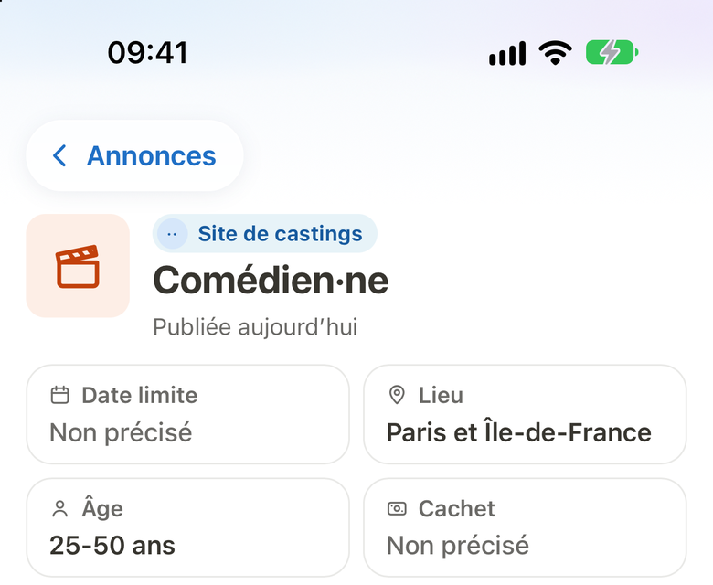
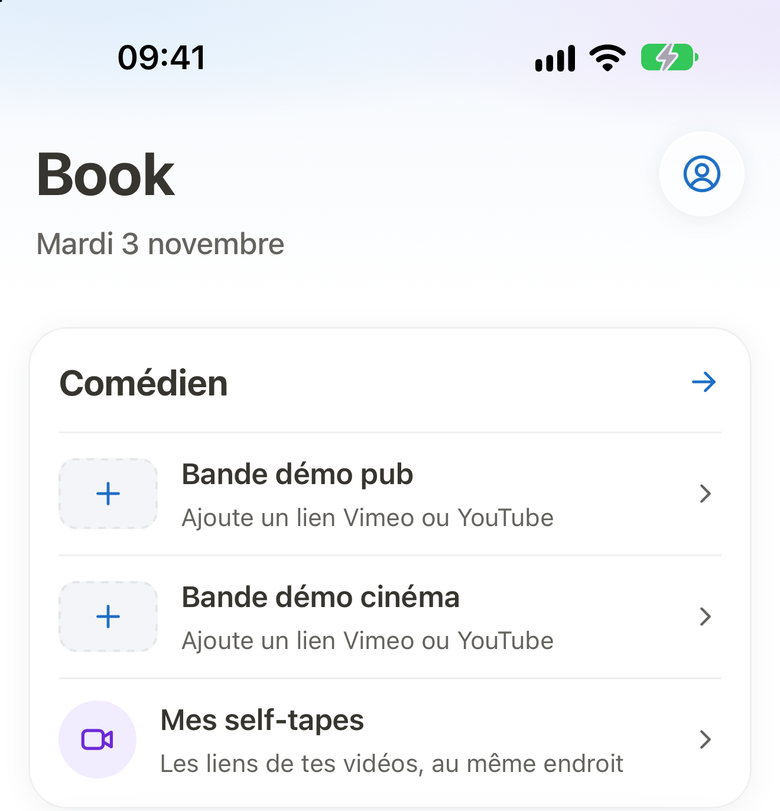
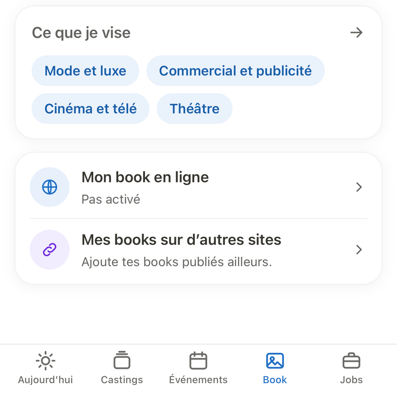
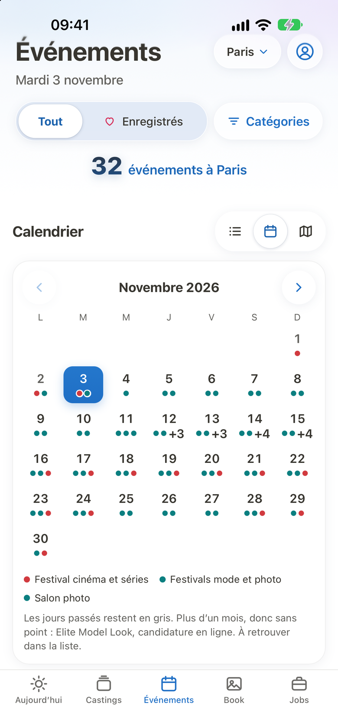
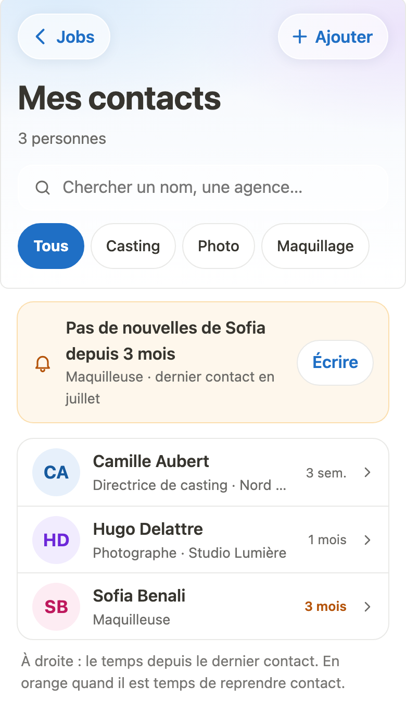
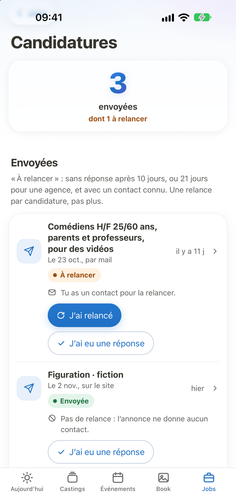

Chiffres du 5 novembre 2026.
Sans agent
Trouver le casting, c’est déjà la moitié du travail.
CastRise t’aide à trouver les castings, à préparer tes candidatures et à savoir qui relancer.
Les castings de ta région, sans fouiller dix sites
Pubs, courts-métrages, figuration : CastRise rassemble des annonces publiées sur plus de 30 sites. Avec le filtre « Où », tu gardes celles de ta région, ou d’une autre région si tu te déplaces.
Dans CastRise, tu les consultes et tu y postules sans payer, autant que tu veux. Certains sites d’origine ont leur propre abonnement.
Gratuit, sans limite.
Bientôt sur l’App Store
Le temps de préparer, pas de courir
Quand un nouveau casting arrive pour toi, ton téléphone te prévient. Tu le découvres assez tôt pour soigner ta candidature.
Bientôt sur l’App Store+ 1 autre
+ 2 autres
Ton CV et ton self‑tape prêts avant qu’on te les demande
Mon parcours te guide pour ton CV, ton self‑tape et tes premières agences, avec pour chaque étape un conseil qui dit comment t’y prendre. L’annuaire liste une vingtaine d’agences qui prennent des comédiens. Tes bandes démo et tes self‑tapes se rangent dans le Book, au même endroit.
Avec l’abonnement, après 3 jours d’essai.
Bientôt sur l’App Store
Tes photos en un lien, à la sortie de l’audition
On te demande tes photos en partant ? Tu envoies un lien depuis ton téléphone. À côté, Mon profil réunit ton CV et tes vidéos de jeu, et s’exporte en fiche PDF.
Avec l’abonnement, après 3 jours d’essai.
Bientôt sur l’App Store
Les festivals de cinéma de Paris, assez tôt pour t’organiser
Dans un festival, tu croises des gens qui font des films. D’octobre à mars, Événements réunit plus de 10 dates de cinéma à Paris, avec le site officiel de chacune. Tu vois tout de suite celles qui sont sur invitation.
Avec l’abonnement, après 3 jours d’essai.
Bientôt sur l’App Store
Une rencontre de festival, retrouvée six mois après
Tu notes chaque rencontre dans le carnet, qu’elle vienne d’un casting de pub ou d’un festival de courts. Un rappel te dit quand reprendre contact.
Avec l’abonnement, après 3 jours d’essai.
Bientôt sur l’App Store
Après vingt candidatures, savoir qui relancer
Au bout d’un moment, difficile de savoir qui a répondu. Jobs garde la liste de tes candidatures et de tes missions, et te montre qui relancer. Dans Mes parutions, tu gardes les liens de ce qui a été publié avec toi.
Avec l’abonnement, après 3 jours d’essai.
Bientôt sur l’App Store
Avec l’abonnement
La veille d’une audition, pose tes questions à l’assistant IA
Comment aborder la scène, quoi dire en entrant ? Pose la question à l’assistant, même à minuit. Ses réponses tiennent compte de ton profil. Il ne parle à personne en ton nom et ne remplace pas un agent artistique.
Pour être clair
CastRise n’est pas un agent
- Il ne te représente pas et ne parle à personne en ton nom.
- Il ne négocie pas tes cachets et ne prend aucune commission.
- Il ne te garantit aucun rôle. Personne ne le peut.
Tu t’en sers en attendant d’avoir un agent, ou en plus du tien.
Prix
Gratuit pour les castings, 3 jours d’essai pour le reste
Le reste demande un abonnement : book et profil, Événements, Jobs, carnet, vérification des licences et annuaire, Mon parcours, assistant IA.
Mensuel
9,99 €
par mois, 3 jours d’essai
Trimestriel
24,99 €
tous les 3 mois, 3 jours d’essai
Annuel
59,99 €
par an, soit moins de 5 € par mois, 3 jours d’essai
À vie
249,99 €
en un seul paiement, sans essai
Le mensuel, le trimestriel et l’annuel commencent par 3 jours d’essai gratuit, une fois par identifiant Apple. L’achat à vie n’a pas d’essai et ne se renouvelle pas. L’abonnement se renouvelle seul pour la même durée, sauf résiliation au moins 24 heures avant la fin de l’essai ou de la période en cours. Tu le résilies dans les réglages de ton iPhone. Prix pour la France, TTC.
Questions
Je n’ai pas encore d’agent. C’est pour moi ?
Oui. CastRise sert à trouver des castings et à préparer tes candidatures sans attendre qu’un agent te représente.
C’est vraiment gratuit ?
Voir les castings et y postuler, oui, sans limite. Le reste de l’app demande un abonnement, avec 3 jours d’essai sur le mensuel, le trimestriel et l’annuel.
C’est un agent artistique ?
Non. Ni l’app ni son assistant IA ne te représentent, ne parlent en ton nom ou ne touchent quoi que ce soit sur tes cachets. Pour un contrat important, demande l’avis d’un professionnel.
Est-ce que CastRise me trouve un rôle ?
Non, et personne ne peut te le garantir. L’app te montre où postuler et t’aide à préparer ta candidature.
J’ai déjà un agent. À quoi ça me sert ?
À voir les castings qui passent, à garder tes contacts et à préparer tes auditions. Si ton contrat est exclusif, parles-en avec ton agent avant de postuler en direct.
Et si j’ai moins de 18 ans ?
L’app t’est ouverte. Avant 16 ans, jouer demande une autorisation administrative, que l’employeur doit obtenir. Avant 18 ans, un contrat se signe avec l’accord de tes parents.
Qui voit mes photos ?
Les personnes à qui tu envoies le lien de ton book. Il n’apparaît pas sur Google, sauf si tu l’actives.
Et mes données ?
Tu peux les exporter depuis l’app, avec ou sans abonnement, une fois toutes les 24 heures.
Et si je veux partir ?
Tu supprimes ton compte depuis l’app. Avec un abonnement, résilie-le aussi dans les réglages de ton iPhone : supprimer l’app ne suffit pas.
D’où viennent les chiffres de cette page ?
Des données de l’app, comptées le 5 novembre 2026 et arrondies vers le bas. Le nombre d’annonces de la semaine est celui que l’app affiche à son premier écran : les annonces arrivées dans les 7 jours avant le 5 novembre 2026 au soir, depuis des sites français, tous profils confondus. Les agences viennent de l’annuaire de l’app, et les événements de la liste d’Événements. Pour chercher une agence, l’app s’appuie sur plus de 700 avis du Journal officiel parus depuis 1993 : licences, renouvellements, retraits et agréments pour les enfants.
Et sur Android ?
Pour l’instant, CastRise n’existe que sur iPhone.
Ton prochain rôle n’attend pas qu’un agent te signe.
Télécharge CastRise, remplis ton profil, et regarde les castings qui arrivent.
Sur iPhone. Dans CastRise, voir les castings et y postuler est gratuit, sans limite.